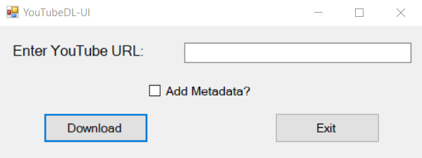
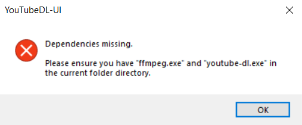
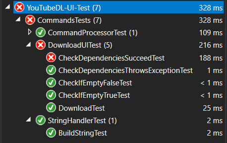

YouTubeDL-UI is a Windows Forms application that allows for the conversion and metadata editing of mp3 files.
It was built using C# and has two dependencies, ffmpeg and youtube-dl.
These two dependencies allow for the downloading of YouTube videos and the modification of mp3 metadata.
This project was a new experience for me because it required skills that I was not completely familiar with yet, such as:
- the management of local dependencies
- processing of file systems
- creation of new files
- and the usage of the command line in an application.
I learned that in order to check for the necessary files for a project, I had to determine the file path of the dependencies.
Since the path of the dependencies can vary greatly depending on the user's system, I opted to search for the files in the same folder as the executable and inform the user to place the dependencies there by error message box.
Along with these dependencies, I learned the basics of using an external program alongside my application in the form of the command line prompt.
I had to implement a way to run commands in the command prompt to activate the dependencies in a way that would not be intrusive to the user, leading to the added automatic closing of the prompt upon completion and showing no window.
Although it is not perfect, it was a new experience for me to improve on.
In the future, I plan to provide an in-program command line for users to view what is being ran in the background.
This program was also my first encounter with unit testing.
Prior to this project, I did not have any experience with unit testing, but after doing research on Visual Studio's unit test library, I was able to implement unit tests for checking dependencies, opening the command prompt, and the processing of strings.
Although this program is not yet complete, I plan to use any future knowledge I get from education and research to complete and refine this application.
 Project Repository
Project Repository

The download prompt, showcasing a textbox for a link and a checkbox for metadata.

The error message that appears when the dependencies are not found.

A series of unit tests. Most are successful, however, one is unsuccessful due to a file path struggle.